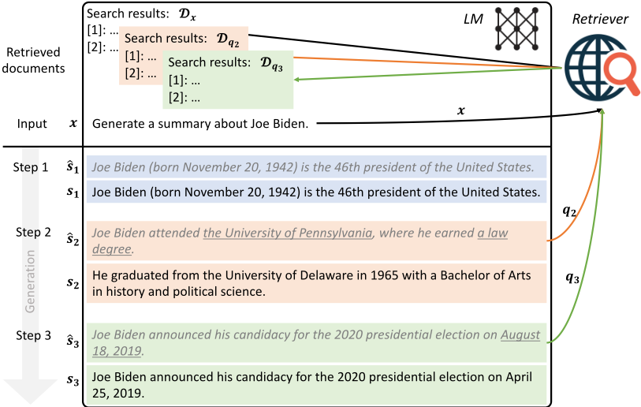
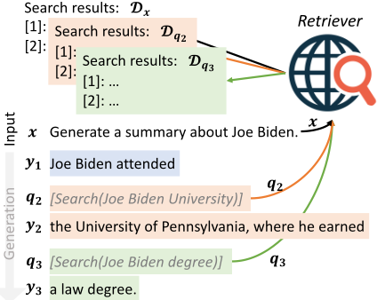
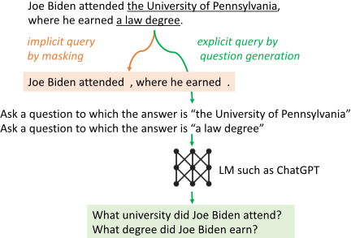
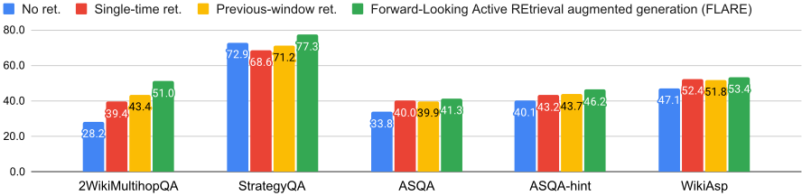
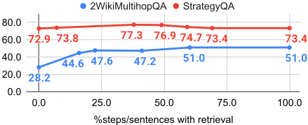

主动检索增强生成（Active Retrieval Augmented Generation，FLARE）
论文针对主流 RAG 采用 retrieve-and-generate 模式、仅基于用户输入做一次性检索的局限：在长文本生成（长答案 QA、开放域摘要、CoT 推理）中信息需求随生成推进不断变化，一次性检索无法覆盖。方法上提出 FLARE：迭代地先临时生成下一句，若句中出现概率低于阈值 θ 的低置信 token，则触发检索，用该句构造查询（掩码低置信 token 的隐式查询，或用 gpt-3.5-turbo 针对低置信片段零样本生成问题的显式查询），将检索文档拼接到输入前重新生成该句；另有 FLAREinstruct 变体通过 few-shot 检索指令让模型生成 [Search(query)]。全程推理时完成、无需训练，基座为 text-davinci-003，检索用 BM25（Wikipedia）或 Bing。在 2WikiMultihopQA、StrategyQA、ASQA/ASQA-hint、WikiAsp 四个任务上全面优于一次性检索与固定间隔/上一句/问题分解等多轮检索基线。关键结论：用'下一句'而非'上文'做查询显著更有效；检索触发比例在 40%~80% 句子时通常最佳，过度检索反而引入噪声。对团队的知识库问答与长文档生成场景是'何时检索、用什么查询'的直接方法参考。
现有检索增强 LM 多为一次性检索：仅基于用户输入检索一次后生成完整答案，适用于信息需求明确的短答案问答；但在长文本生成中，信息需求复杂且无法仅从输入判断，需要在生成过程中持续获取知识。已有的多轮检索方法存在缺陷：用过去上下文做查询可能不反映模型未来想生成的内容；固定间隔检索时机不当且低效；问题分解方法需要任务特定的 prompt 标注，泛化性受限。论文要构建一个简单、通用、能在生成全程主动决定何时检索与检索什么的检索增强 LM。
提出 active retrieval augmented generation 通用框架与 FLARE 实现，核心是'前瞻式 + 主动式'检索：(1) 主动触发——利用 LLM 置信度校准良好的观察，仅当临时生成的下一句中出现概率低于阈值 θ 的 token 时才检索，避免不必要检索；(2) 前瞻查询——用对下一句的预测（而非过去上下文）作为查询以反映未来生成意图，并提供两种查询构造：掩码低置信 token 的隐式查询、针对低置信 span 零样本生成问题的显式查询（受 Self-ask 启发但无需人工标注）。两个变体：FLAREinstruct 用 few-shot 检索指令（skill 1 搜索技能 + skill 2 任务技能组合）让模型生成 [Search(query)]；FLAREdirect 直接用临时句做查询并在低置信时重新生成。每步丢弃先前检索文档、仅保留当前检索结果以避免超出上下文长度限制。推理时适用于任意黑盒 LLM，无需额外训练。
在 4 个长文本知识密集型任务/数据集（2WikiMultihopQA、StrategyQA、ASQA/ASQA-hint、WikiAsp）上，FLARE 在所有指标上优于 single-time 检索及 previous-window、previous-sentence、question decomposition 三类多轮检索基线（具体数值见图4与表1/表2，正文未列出数字）
多跳 QA（2WikiMultihopQA）提升最显著；FLARE 甚至优于需要人工标注子问题示例的 question decomposition 基线，说明高效的前瞻检索无需人工示例标注
消融：用'下一句'做查询明显优于用'上一句'（表3）；过去 token 数超过 32 会损害性能（表4）
检索触发比例与性能的关系：2WikiMultihopQA 上检索比例超过 60% 后性能趋于平台；StrategyQA 上超过 50% 后性能下降（不必要检索引入噪声）；触发 40%~80% 句子的检索通常带来好性能，实际平均触发比例为 30%~60%
查询构造消融：直接用完整句子（β=0）检索差于掩码低置信 token 后检索；隐式（掩码）与显式（问题生成）两种查询构造性能相近
FLAREinstruct 与 question decomposition 基线差距较大，表明仅靠任务无关的检索指令教模型生成搜索查询较为困难
区别于一次性检索的 RAG，以及基于过去上下文/固定间隔的被动多轮检索（RETRO、IC-RALM、KNN-LM、IRCoT 等），FLARE 的核心新意是将'前瞻式'（用对即将生成句子的预测作为查询，反映未来生成意图）与'主动式'（仅在出现低置信 token 时才检索）结合；同时无需训练、适用于仅提供 API 的黑盒 LLM，相比需要任务特定子问题标注的 question decomposition 方法（self-ask 等）更通用。论文还给出了 active retrieval augmented generation 的统一框架化视角。
相关度级别：high
命中能力域：3.1 上下文工程与记忆 | 3.3 Agent 架构与工具使用
理由：直接命中 3.1 的核心技术：论文完整回答了长文本生成中 RAG 的三个工程问题——何时检索（置信度触发）、用什么查询（前瞻句/掩码/自动生成问题）、检索结果如何组织进上下文（每步丢弃旧检索文档防止超长），可迁移到团队的知识库问答与文档生成流水线。同时，置信度触发的检索调用本质是生成循环内的条件性工具调用（受 Toolformer 启发的 [Search(query)] 机制），对 3.3 的工具调用策略与单 Agent 执行可靠性有借鉴；论文给出的'检索比例-性能'量化关系对控制检索成本也有直接参考价值。
建议动作：深入精读并做内部分享
arXiv:2305.06983v2 [cs.CL] 22 Oct 2023
Zhengbao Jiang 1 ∗ Frank F. Xu 1 ∗ Luyu Gao 1 ∗ Zhiqing Sun 1 ∗ Qian Liu 2 3 1 1 1
Jane Dwivedi-Yu Yiming Yang Jamie Callan Graham Neubig
1
卡内基梅隆大学语言技术研究所 2 3
Sea AI Lab Meta 公司 FAIR
{zhengbaj,fangzhex,luyug,zhiqings,gneubig}@cs.cmu.edu
尽管大型语言模型（LMs）在理解和生成语言方面具有卓越的能力，但它们往往会产生幻觉并生成事实不准确的内容。通过从外部知识资源中检索信息来增强语言模型是一种有前景的解决方案。现有的大多数检索增强语言模型采用“检索-生成”（retrieve-and-generate）的设置，仅基于输入进行一次信息检索。然而，在涉及生成长文本的更一般场景中，这种做法存在局限性，因为在整个生成过程中持续收集信息至关重要。在本工作中，我们对主动检索增强生成（active retrieval augmented generation）提供了一个广义的视角，这类方法能够在生成过程中主动决定何时检索以及检索什么内容。我们提出了前向主动检索增强生成（Forward-Looking Active REtrieval augmented generation，FLARE），这是一种通用方法，它迭代地利用对即将生成的句子的预测来预判未来内容，并将该预测用作查询来检索相关文档，以便在句子包含低置信度词元（token）时重新生成该句子。我们在4个长篇知识密集型生成任务/数据集上对FLARE与基线方法进行了全面测试。FLARE在所有任务上都取得了优越或有竞争力的性能，证明了我们方法的有效性。1
Generative language models (LMs) (Brown et al., 2020; Ouyang et al., 2022; OpenAI, 2023; Chowdhery et al., 2022; Zhang et al., 2022; Touvron et al., 2023; Zhao et al., 2023) have become a foundational component in natural language processing (NLP) systems with their remarkable abilities. Although LMs have memorized some world knowledge during training (Petroni et al., 2019; Roberts et al., 2020; Jiang et al., 2020), they still tend to hallucinate and create imaginary content (Maynez et al., 2020; Zhou et al., 2021). Augmenting LMs with retrieval components that look up relevant information from external knowledge resources is a promising direction to address hallucination (Khandelwal et al., 2020; Izacard et al., 2022).
∗ Lead contributors.
1 Code and datasets are available at https://github.com/ jzbjyb/FLARE .
Retrieval augmented LMs commonly use a retrieve-and-generate setup where they retrieve documents based on the user's input, and then generate a complete answer conditioning on the retrieved documents (Chen et al., 2017; Guu et al., 2020; Lewis et al., 2020; Izacard and Grave, 2021; Sachan et al., 2021; Lee et al., 2021; Jiang et al., 2022; Izacard et al., 2022; Nakano et al., 2021; Qian et al., 2023; Lazaridou et al., 2022; Shi et al., 2023). These single-time retrieval augmented LMs outperform purely parametric LMs, particularly for shortform knowledge-intensive generation tasks such as factoid question answering (QA) (Kwiatkowski et al., 2019; Joshi et al., 2017), where the information needs are clear in the user's input, and it is sufficient to retrieve relevant knowledge once solely based on the input .
Increasingly powerful large LMs have also demonstrated abilities in more complex tasks that involve generating long-form output, such as longform QA (Fan et al., 2019; Stelmakh et al., 2022), open-domain summarization (Cohen et al., 2021; Hayashi et al., 2021; Giorgi et al., 2022), and (chain-of-thought; CoT) reasoning (Wei et al., 2022; Ho et al., 2020; Geva et al., 2021; Hendrycks et al., 2020). In contrast to short-form generation, long-form generation presents complex information needs that are not always evident from the input alone . Similar to how humans gradually gather information as we create content such as papers, essays, or books, long-form generation with LMs would require gathering multiple pieces of knowledge throughout the generation process . For example, to generate a summary about a particular topic, the initial retrieval based on the topic name

(e.g., Joe Biden) may not cover all aspects and details. It is crucial to retrieve extra information as needed during generation, such as when generating a certain aspect (e.g., Joe Biden's education history) or a specific detail (e.g., the date of Joe Biden's presidential campaign announcement).
已有若干尝试在生成过程中进行多次检索。这些尝试包括以固定间隔被动地利用过去上下文来检索额外信息的方法（Khandelwal et al., 2020; Borgeaud et al., 2022; Ram et al., 2023; Trivedi et al., 2022），这类方法可能无法准确反映语言模型（LM）未来打算生成的内容，或者会在不恰当的时点进行检索。多跳问答（multihop QA）领域的一些工作将完整问题分解为若干子问题，并利用每个子问题来检索额外信息（Press et al., 2022; Yao et al., 2022; Khot et al., 2022; Khattab et al., 2022）。
我们提出如下问题：能否构建一个简单且通用的检索增强语言模型，使其能够在整个生成过程中主动决定何时检索以及检索什么，并适用于多种长篇生成任务？我们给出了主动检索增强生成（active retrieval augmented generation）的广义视角。关于何时检索，我们的假设是：LM应当只在缺乏所需知识时才检索信息，以避免被动式检索增强LM（Khandelwal et al., 2020; Borgeaud et al., 2022; Ram et al., 2023; Trivedi et al., 2022）中出现的非必要或不恰当检索。鉴于大型LM往往校准良好、且低概率/低置信度通常意味着知识欠缺这一观察（Kadavath et al., 2022），我们采用一种仅在LM生成低概率词元（token）时才进行检索的主动检索策略。在决定检索什么时，重要的是考虑LM未来打算生成的内容，因为主动检索的目标是有益于后续生成。因此，我们提出通过生成一个临时的下一句来预判未来，将其用作查询来检索相关文档，然后基于检索到的文档重新生成下一句。结合这两个方面，我们提出了前向主动检索增强生成（Forward-Looking Active REtrieval augmented generation，FLARE），如图1所示。FLARE迭代地生成一个临时的下一句，若其中包含低概率词元，则将其用作查询来检索相关文档，并重新生成下一句，如此往复直至生成结束。
FLARE在推理阶段适用于任何现有LM，无需额外训练。考虑到GPT-3.5（Ouyang et al., 2022）在多种任务上取得的令人瞩目的性能，我们在text-davinci-003上检验了所提方法的有效性。我们在4个涉及生成长输出的多样化任务/数据集上评估FLARE，包括多跳问答（2WikiMultihopQA）、常识推理（StrategyQA）、长篇问答（ASQA）和开放域摘要（WikiAsp）（Ho et al., 2020; Geva et al., 2021; Stelmakh et al., 2022; Hayashi et al., 2021）。在所有任务上，与单次检索和多次检索基线相比，FLARE均取得了优越或有竞争力的性能，证明了我们方法的有效性和泛化能力。
我们正式定义了单次检索增强生成（single-time retrieval augmented generation），并提出了主动检索增强生成（active retrieval augmented generation）的框架。
给定用户输入 x 和文档语料库 D = { d i } |D| i =1（例如全部维基百科条目），检索增强语言模型（retrieval augmented LMs）的目标是利用从语料库中检索到的信息，生成包含 m 个句子或 n 个 token 的答案 y = [ s 1 , s 2 , ..., s m ] = [ w 1 , w 2 , ..., w n ]。
在检索增强语言模型中，语言模型（LM）通常与一个检索器（retriever）配对，该检索器能够针对查询 q 检索出文档列表 D q = ret ( q )；LM 同时以用户输入 x 和检索到的文档 D q 为条件来生成答案。由于我们侧重于考察确定何时检索以及检索什么内容的各种方法，我们遵循现有方法（Ram et al., 2023; Trivedi et al., 2022）的做法，将检索到的文档前置在用户输入之前，以辅助基线方法和我们方法的后续生成，从而实现公平比较：y = LM ([ D q , x ])，其中 [ · , · ] 表示按指定顺序进行的拼接。
最常见的选择是直接将用户输入作为检索的查询，并一次性生成完整答案 y = LM ([ D x , x ])。
我们的直觉是：(1) 语言模型（LM）应当只在自身缺乏必要知识时才进行检索，以避免不必要或不恰当的检索；(2) 检索查询应当反映未来生成内容的意图。我们提出了两种前瞻式主动检索增强生成（FLARE）方法来实现主动检索增强生成框架。第一种方法在使用鼓励检索的指令生成答案的同时，提示 LM 在必要时生成检索查询，记为 FLAREinstruct。第二种方法直接将 LM 的生成内容用作搜索查询，记为 FLAREdirect，该方法迭代地生成下一句话以洞察未来的主题，若存在不确定的词元（token），则检索相关文档并重新生成下一句话。
受 Toolformer（Schick et al., 2023）的启发，表达检索信息需求的一种直接方式是在需要额外信息时生成"[Search(query)]"（Schick et al., 2023），例如：“加纳国旗上的颜色具有以下含义。红色代表 [Search(Ghana flag red meaning)] 烈士的鲜血，……"。在使用仅提供 API 访问的 GPT-3.5 模型时，我们通过少样本提示（few-shot prompting，Brown et al., 2020）来引出这种行为。

具体而言，对于某个下游任务，我们将与检索相关的指令和示例放在开头作为技能 1，随后将下游任务的指令和示例作为技能 2。给定一个测试用例，我们要求语言模型（LM）在执行任务的同时结合技能 1 和技能 2 来生成检索查询。提示的结构如 Prompt 3.1 所示，完整细节可参见 Prompt D.3。
技能 1. 用于指导语言模型（LM）生成搜索查询的指令。
若干与搜索相关的示例。
技能 2. 用于指导 LM 执行特定下游任务（例如多跳问答，multihop QA）的指令。若干与任务相关的示例。
用于指导 LM 针对该测试用例结合技能 1 和技能 2 的指令。该测试用例的输入。
如图 2 所示，当 LM 生成 '[Search(query)]'（以灰色斜体显示）时，我们停止生成，并使用查询词检索相关文档，将这些文档前置到用户输入之前，以辅助后续生成，直到生成下一个搜索查询或到达结尾为止。更多实现细节见附录 A。
由于我们无法对黑盒 LM 进行微调，我们发现 FLAREinstruct 通过检索指令生成的查询可能并不可靠。因此，我们提出了一种更直接的前瞻式主动检索方法，利用下一句话来决定何时检索以及检索什么内容。
如图 1 所示，在步骤 t，我们首先在不以检索到的文档为条件的情况下生成一个临时的下一句话 ˆs_t = LM([x, y<t])。然后，我们基于 ˆs_t 决定是否触发检索并构造查询。如果 LM 对 ˆs_t 具有信心，我们便在不检索额外信息的情况下接受它；否则，我们使用 ˆs_t 构造搜索查询 q_t 来检索相关文档，然后重新生成下一句话 s_t。我们之所以以句子作为迭代的基础，是因为句子作为语义单元具有重要意义——它既不像短语那样过短，也不像段落那样冗长。不过，我们的方法也可以采用短语或段落作为基础。
由于 LM 往往具有良好的校准性，低概率/置信度通常意味着知识的缺乏（Jiang et al., 2021; Kadavath et al., 2022; Varshney et al., 2022），因此，只要 ˆs_t 中存在概率低于阈值 θ ∈ [0, 1] 的 token，我们就会主动触发检索。θ = 0 表示从不触发检索，而 θ = 1 则表示每句话都触发检索。
其中，查询 q_t 是基于 ˆs_t 构造的。
执行检索的一种方式是直接将下一句 ˆs_t 用作查询 q_t。这种做法与那些使用由语言模型（LM）生成的假设性标题或段落作为检索查询或证据的方法精神相似（Gao et al., 2022; Sun et al., 2022; Yu et al., 2022; Mao et al., 2021）。我们将此类技术推广到主动信息获取至关重要的长文本生成场景中。
我们发现，使用下一句进行检索比使用先前上下文进行检索的效果显著更好，这将在后文 6.2 小节中展示。然而，这种方式存在使句中已有错误延续下去的风险。例如，如果 LM 生成的句子是 "Joe Biden attended the University of Pennsylvania"，而不是他就读于特拉华大学（University of Delaware）这一正确事实，那么使用这个错误句子作为查询可能会检索到误导性的信息。我们提出了两种简单的方法来克服这一问题，如图 3 所示。

掩码句子作为隐式查询。第一种方法将 ˆs_t 中概率低于阈值 β ∈ [0, 1] 的低置信度 token 掩码掉，其中 β 越高，掩码越激进。这样可以去除句子中潜在的干扰信息，从而提高检索准确率。
生成问题作为显式查询。另一种方法是生成针对 ˆs_t 中低置信度片段的显式问题。例如，如果 LM 对 "the University of Pennsylvania" 不确定，那么类似 "Which university did Joe Biden attend?" 的问题可以帮助检索相关信息。Self-ask（Press et al., 2022）通过在下游任务示例中手动插入后续问题来实现这一点，如后文 Prompt D.2 所示，这需要针对特定任务的标注工作。与之不同，我们开发了一种通用方法，可以在无需额外标注的情况下为低置信度片段生成问题。具体而言，我们首先从 ˆs_t 中提取所有概率低于 β 的片段。对于每个提取出的片段 z，我们提示 gpt-3.5-turbo 生成一个可以用该片段回答的问题 q_{t,z}：
用户输入 x 。
到目前为止已生成的输出 y ≤ t 。
给定上述文本，请提出一个问题，使其答案为术语/实体/短语 ' z '。
我们使用每个生成的问题进行检索，并将返回的文档交错合并到单一排序列表中，以辅助后续生成。总之，查询 q t 基于 ˆ s t 按如下方式构造：
基础语言模型（Base LM） 我们通过迭代查询其 API，在最先进的 GPT-3.5 语言模型之一 text-davinci-003 上验证我们的方法。2
文档语料库与检索器。由于我们专注于检索与生成的集成，我们使用现成的检索器，其以查询作为输入并返回相关文档列表。对于主要依赖 Wikipedia 知识的数据集，我们使用 Karpukhin et al. (2020) 的 Wikipedia 转储，并采用 BM25 (Robertson and Zaragoza, 2009) 作为检索器。对于依赖开放网络知识的数据集，我们使用 Bing 搜索引擎作为我们的检索器。3
检索文档的格式化。多个检索到的文档按照其排名顺序进行线性化，然后使用提示 D.1 添加到用户输入的开头。
其他实现细节，例如句子分词（tokenization）与效率，包含在附录 A 中。
开放域摘要（Open-domain summarization） 开放域摘要的目标是通过从开放网络收集信息，生成关于某一主题的全面摘要（Giorgi et al., 2022）。我们使用 WikiAsp（Hayashi et al., 2021），该方法旨在针对 Wikipedia 中 20 个领域的实体生成基于方面的摘要，例如：“生成关于 Echo School (Oregon) 的摘要，包括以下方面：学术、历史。”实验设置细节见附录 B。

评估指标包括 ROUGE、基于命名实体的 F1，以及用于衡量事实一致性的 UniEval（Zhong et al., 2022）。
我们首先报告 4 个任务/数据集上的总体结果，并将 FLARE 的性能与第 4 节中介绍的所有基线方法进行比较。随后，我们进行消融实验，以研究本方法中各种设计选择的有效性。
总体结果。图 4 报告了 FLARE 与各基线方法在所有任务/数据集上的总体性能。FLARE 在所有任务/数据集上均优于所有基线方法，这表明 FLARE 是一种通用方法，能够在整个生成过程中有效地检索额外信息。
在各类任务中，多跳问答（multihop QA）的提升最为显著。这在很大程度上归因于该任务定义清晰、目标明确，即通过两跳推理过程得出最终答案，这使得语言模型（LM）更容易生成切题的输出。相比之下，ASQA 和 WikiAsp 更为开放，这增加了生成和评估两方面的难度。ASQA-hint 上的提升大于 ASQA，这是因为在许多情况下，识别歧义方面即使对人类而言也颇具挑战，而提供通用提示有助于 LM 保持切题。
与基线方法的深入比较。表 1 报告了所有基线方法在 2WikiMultihopQA 上的性能。FLARE 以较大幅度优于所有基线方法，这证实了前瞻式主动检索（forward-looking active retrieval）是高度有效的。大多数多次检索增强方法优于单次检索，但提升幅度各不相同。使用前一句进行检索所带来的提升相对较小，我们推测这主要是因为在 2WikiMultihopQA 中，前一句所描述的实体或关系往往与下一句中的不同。而前一窗口（previous-window）方法则可能利用句子的前半部分来检索对生成后半部分潜在有帮助的信息。在所有基线方法中，问题分解方法（Press et al., 2022）取得了最佳性能，这并不令人意外，因为人工标注了分解子问题的上下文示例（in-context exemplars）（Prompt D.2）会引导 LM 生成与未来生成内容的主题/意图相一致的子问题。FLARE 优于该基线方法，这表明要实现有效的未来感知检索，并不需要人工标注示例。FLAREinstruct 与问题分解之间的差距较大，这表明利用任务通用的检索指令和示例来教 LM 生成搜索查询是具有挑战性的。
| Methods | EM | F 1 | Prec. | Rec. |
|---|---|---|---|---|
| No retrieval | 28.2 | 36.8 | 36.5 | 38.6 |
| Single-time retrieval | 39.4 | 48.8 | 48.6 | 51.5 |
| Multi-time retrieval | Multi-time retrieval | Multi-time retrieval | Multi-time retrieval | Multi-time retrieval |
| Previous-window | 43.2 | 52.3 | 51.7 | 54.5 |
| Previous-sentence | 39.0 | 49.2 | 48.9 | 51.8 |
| Question decomposition | 47.8 | 56.4 | 56.1 | 58.6 |
| FLARE instruct (ours) | 42.4 | 49.8 | 49.1 | 52.5 |
| FLARE direct (ours) | 51.0 | 59.7 | 59.1 | 62.6 |
| Methods | EM | F 1 | Prec. | Rec. |
我们在表 2 中报告了其他数据集的所有指标。FLARE 在所有指标上均优于基线方法。在 ASQA 上，使用前一窗口的检索表现不如单次检索，我们推测这是因为前一窗口无法准确反映未来的意图。由于我们侧重于评估事实性，因此侧重事实内容的指标（如 EM、Disambig-F1、UniEval）比基于所有 token 计算的指标（ROUGE-L）更为可靠。
| Datasets.Metrics | StrategyQA.EM | ASQA.EM | ASQA.D-F 1 | ASQA.R-L | ASQA.DR | ASQA-hint DR.EM | ASQA-hint DR.D-F 1 | ASQA-hint DR.R-L | WikiAsp.UniEval | WikiAsp.E-F 1 | WikiAsp.R-L |
|---|---|---|---|---|---|---|---|---|---|---|---|
| No retrieval | 72.9 | 33.8 | 24.2 | 33.3 | 28.4 | 40.1 | 32.5 | 36.4 34.4 | 47.1 | 14.1 | 26.4 |
| Single-time retrieval | 68.6 | 40.0 | 27.1 | 34.0 | 30.4 | 43.2 | 34.8 | 37.4 36.0 | 52.4 | 17.4 | 26.9 |
| Multi-time retrieval | Multi-time retrieval | Multi-time retrieval | Multi-time retrieval | Multi-time retrieval | Multi-time retrieval | Multi-time retrieval | Multi-time retrieval | Multi-time retrieval | Multi-time retrieval | Multi-time retrieval | Multi-time retrieval |
| Previous-window | 71.2 | 39.9 | 27.0 | 34.3 | 30.4 | 43.7 | 35.7 | 37.5 36.6 | 51.8 | 18.1 | 27.3 |
| Previous-sentence | 71.0 | 39.9 | 27.9 | 34.3 | 30.9 | 44.7 | 35.9 | 37.5 36.7 | 52.6 | 17.8 | 27.2 |
| FLARE (ours) | 77.3 | 41.3 | 28.2 | 34.3 | 31.1 | 46.2 | 36.7 | 37.7 37.2 | 53.4 | 18.9 | 27.6 |
| Datasets.Metrics | StrategyQA.EM | ASQA.EM | ASQA.D-F 1 | ASQA.R-L | ASQA.DR | ASQA-hint DR.EM | ASQA-hint DR.D-F 1 | ASQA-hint DR.R-L | WikiAsp.UniEval | WikiAsp.E-F 1 | WikiAsp.R-L |
| 2WikiMultihopQA.EM | 2WikiMultihopQA.F 1 | 2WikiMultihopQA.Prec. | 2WikiMultihopQA.Rec. | ASQA-hint.EM | ASQA-hint.D-F 1 | ASQA-hint.R-L | ASQA-hint.DR | |
|---|---|---|---|---|---|---|---|---|
| Previous | 39 | 49.2 | 48.9 | 51.8 | 42.5 | 34.1 | 36.9 | 35.5 |
| Next | 48.8 | 57.6 | 57.1 | 60.5 | 45.9 | 35.7 | 37.5 | 36.6 |
| | 2WikiMultihopQA.EM | 2WikiMultihopQA.F 1 | 2WikiMultihopQA.Prec. | 2WikiMultihopQA.Rec. | ASQA-hint.EM | ASQA-hint.D-F 1 | ASQA-hint.R-L | ASQA-hint.DR |
| #Tokens | EM | F 1 | Prec. | Rec. |
|---|---|---|---|---|
| 16 | 43.2 | 52.3 | 51.7 | 54.5 |
| 32 | 43.6 | 52.4 | 52 | 55 |
| 48 | 40 | 49.3 | 49 | 52 |
| All | 39 | 48.5 | 48.2 | 51.1 |
| #Tokens | EM | F 1 | Prec. | Rec. |
前瞻性检索的重要性。我们首先验证了前瞻性检索比基于过去上下文的检索更为有效。我们在 2WikiMultihopQA 和 ASQA-hint 上进行消融实验，比较使用前一句与后一句进行检索的效果。具体而言，两种方法都对每个句子进行检索，并直接使用完整的前一句/后一句作为查询。如表 3 所示，使用后一句进行检索明显优于使用前一句，这证实了我们的假设。
我们还运行了使用不同数量的过去 token 作为查询的前一窗口方法。如表 4 所示，使用过多的过去 token（> 32）会损害性能，进一步证实了我们的假设：先前的上下文可能与未来生成内容的意图无关。

主动检索的重要性。接下来，我们研究主动检索阈值 θ 如何影响性能。为了使我们的方法从完全不检索变为对每个句子都进行检索，我们将决定何时触发检索的置信度阈值 θ 从 0 调整到 1。然后我们计算激活检索的步骤/句子所占的比例，并据此呈现性能。如图 5 所示，在 2WikiMultihopQA 上，当检索比例超过 60% 时性能趋于平稳，表明当语言模型（LM）具有信心时进行检索并非必要。在 StrategyQA 上，当检索比例超过 50% 时性能下降，表明不必要的检索会引入噪声并阻碍原有的生成过程。我们发现对 40%-80% 的句子触发检索通常能在各种任务/数据集上取得良好性能。
不同查询构造方法的有效性。我们研究了通过掩码进行的隐式查询构造，以及通过问题生成进行的显式查询构造。在表 5 中，我们比较了 FLARE 在不同掩码阈值 β 下的性能。直接使用完整句子进行检索（β = 0）的效果比掩码低概率 token 更差，这证实了我们的假设：低置信度的错误 token 会干扰检索器。我们在表 6 中比较了隐式和显式查询构造方法。两种方法的性能相似，表明这两种方法都能有效反映信息需求。
| β | EM | F 1 | Prec. | Rec. |
|---|---|---|---|---|
| 0 | 0.488 | 0.576 | 0.571 | 0.605 |
| 0.2 | 0.498 | 0.588 | 0.582 | 0.616 |
| 0.4 | 0.51 | 0.597 | 0.591 | 0.627 |
| 0.6 | 0.506 | 0.593 | 0.586 | 0.622 |
| β | EM | F 1 | Prec. | Rec. |
| ASQA-hint.EM | ASQA-hint.D-F 1 | ASQA-hint.R-L DR | WikiAsp.UniEval | WikiAsp.E-F 1 | WikiAsp.R-L | |
|---|---|---|---|---|---|---|
| Implicit | 45.7 | 36.9 | 37.7 37.3 | 53.4 | 18.8 | 27.7 |
| Explicit | 46.2 | 36.7 | 37.7 37.2 | 53.4 | 18.9 | 27.6 |
| | ASQA-hint.EM | ASQA-hint.D-F 1 | ASQA-hint.R-L DR | WikiAsp.UniEval | WikiAsp.E-F 1 | WikiAsp.R-L |
关于单次检索与多次检索增强语言模型（LM）的深入讨论，请参见 2.2 小节和第 4 节，这是与本文最相关的研究领域。
迭代检索与自适应检索 迭代式检索与精炼已在文本生成和代码生成任务中得到研究（Peng et al., 2023; Zhang et al., 2023; Zemlyanskiy et al., 2022; Yu et al., 2023）。FLARE 与这些方法的区别在于生成粒度和检索策略。自适应检索此前已在单次检索场景中得到研究，其依据可以是问题流行度或生成概率（Mallen et al., 2022; Li et al., 2023），而我们则聚焦于需要主动信息获取的长文本生成。
浏览器增强的语言模型 WebGPT（Nakano et al., 2021）和 WebCPM（Qin et al., 2023）通过强化学习或监督训练来训练语言模型与浏览器进行交互，以增强事实性，其中在生成之前可以触发多次查询。FLARE 构建于基于文本的检索器之上，但可以与浏览器相结合，从而有望提升检索质量。
为了借助检索增强来辅助长文本生成，我们提出了一种主动检索增强生成框架，该框架在生成过程中决定何时检索以及检索什么内容。我们通过前瞻式主动检索来实现该框架：若即将生成的句子包含低置信度词元，则迭代地使用该句子检索相关信息，并重新生成下一个句子。在4个任务/数据集上的实验结果证明了我们方法的有效性。未来的研究方向包括更好的主动检索策略，以及开发用于主动信息整合的高效语言模型（LM）架构。
我们还在 Wizard of Wikipedia（Dinan et al., 2019）和 ELI5（Fan et al., 2019）上进行了实验，发现 FLARE 并未带来显著的提升。Wizard of Wikipedia 是一个知识密集型对话生成数据集，其输出相对较短（平均约 20 个词元），因此检索多条彼此不同的信息可能并无必要。ELI5（Fan et al., 2019）是一个长文本问答（QA）数据集，要求对开放式问题给出深入的回答。由于 Krishna et al.（2021）中提到的一些问题，例如生成内容难以锚定于检索结果以及评估方面的困难，单次检索和 FLARE 相比不使用检索均未带来显著提升。从工程角度来看，采用朴素实现将生成与检索交替进行，会同时增加开销和生成成本。语言模型（LM）需要被多次激活（每次检索一次），而无缓存的实现还需要在每次检索之后重新计算之前的激活值。这一问题有望通过特殊的架构设计得到缓解，即对检索到的文档 D q t 与输入/生成内容（ x / y <t ）分别进行独立编码。
FLAREinstruct 实现细节 我们发现，语言模型（LM）能够有效地将检索与下游任务相关技能相结合，并在执行任务的同时生成有意义的搜索查询。然而，存在两个问题：（1）语言模型生成的搜索查询数量往往少于实际所需；（2）生成过多的搜索查询会干扰答案生成，并对性能产生不利影响。我们分别采用两种方法来解决这些问题。首先，我们将 token '[' 的 logit 增加 2.0，以提高语言模型生成 '[Search(query)]' 的几率。其次，每当语言模型生成一个搜索查询时，我们便利用它检索相关信息，随即将其从生成内容中移除，并通过向 '[' 的 logit 添加一个较大的负值来禁止生成 '['，从而生成接下来的若干 token。
FLARE 的初始查询。FLARE 以用户输入 x 作为初始查询来检索文档，进而生成第一句话 ˆ s 1 = LM ([ D x , x ])，以此启动迭代生成过程。对于后续步骤，临时的前瞻性句子在生成时不使用检索到的文档。
句子切分。在每一步 t，我们生成 64 个 token，其长度超过大多数句子，然后使用 NLTK 句子切分器 5 提取第一句话并丢弃其余部分。
效率 如 6.2 小节所示，根据下游任务的不同，平均有 30% ∼ 60% 的句子会触发检索。相比之下，KNN-LM（Khandelwal et al., 2020）对每个 token 都进行检索，RETRO 或 IC-RALM（Borgeaud et al., 2022; Ram et al., 2023）每 4 ∼ 32 个 token 检索一次，IRCoT（Trivedi et al., 2022）对每个句子都进行检索。然而，与单次检索相比，采用朴素实现将检索与生成交替进行确实会增加开销，我们将在局限性章节（第 9 节）中对此进行讨论。
开放域摘要 原始的 WikiAsp 数据集是为多文档摘要设计的，它会为系统提供一组参考文献列表。我们通过移除相关参考文献、转而从开放网络收集信息，将其转换为开放域设定。对于"Generate a summary about Echo School (Oregon) including the following aspects: academics, history."这一指令，我们期望生成的输出为"# Academics. In 2008, 91% of the school's seniors received their high school diploma... # History. The class of 2008 was the 100th class in the school's history."，其中 # 用于标示各个方面。我们人工标注了 4 个示例（Prompt D.10），并使用 Bing 搜索引擎从开放网络中检索 5 篇文档。为避免泄露，我们将表 8 中列出的若干与 Wikipedia 相关的域名从 Bing 的搜索结果中排除。
FLARE 在不同数据集上的超参数列于表 9 中。
用于线性化多个文档的提示（prompt）如 Prompt D.1 所示。selfask（Press et al., 2022）中使用的提示如 Prompt D.2 所示。不同任务/数据集的提示与示例分别如 Prompt D.3、D.4、D.5、D.6、D.8 和 D.10 所示。
[ 2 ] 文档 2
...
用户输入 x
问题：Theodor Haecker 和 Harry Vaughan Watkins 谁活得更久？
这里是否需要追问：是。
追问：Theodor Haecker 去世时多少岁？中间答案：Theodor Haecker 去世时 65 岁。
追问：Harry Vaughan Watkins 去世时多少岁？
中间答案：Harry Vaughan Watkins 去世时 69 岁。
所以最终答案是：Harry Vaughan Watkins。
| Settings | 2WikiMultihopQA (Ho et al., 2020) | StrategyQA (Geva et al., 2021) | ASQA (Stelmakh et al., 2022) | WikiAsp (Hayashi et al., 2021) |
|---|---|---|---|---|
| Dataset statistics | Dataset statistics | Dataset statistics | Dataset statistics | Dataset statistics |
| Task #Examples | multihop QA 500 | commonsense QA 229 | long-form QA 500 | open-domain summarization 500 |
| Evaluation settings | Evaluation settings | Evaluation settings | Evaluation settings | Evaluation settings |
| Metrics | EM, F 1 , Prec., Rec. | EM | EM, Disambig-F 1 , ROUGE, DR UniEval, entity-F 1 , ROUGE | EM, Disambig-F 1 , ROUGE, DR UniEval, entity-F 1 , ROUGE |
| Retrieval settings | Retrieval settings | Retrieval settings | Retrieval settings | Retrieval settings |
| Corpus Retriever Top-k | Wikipedia BM25 2 | Wikipedia BM25 3 | Wikipedia BM25 3 | open web Bing 5 |
| Prompt format | Prompt format | Prompt format | Prompt format | Prompt format |
| #Exemplars | 8 | 6 | 8 | 4 |
| Ret. for exemplars | ✓ | ✗ | ✗ | ✗ |
| Settings | 2WikiMultihopQA (Ho et al., 2020) | StrategyQA (Geva et al., 2021) | ASQA (Stelmakh et al., 2022) | WikiAsp (Hayashi et al., 2021) |
| Dataset | θ | β | Query formulation | Combine single- &multi-time retrieval |
|---|---|---|---|---|
| 2WikiMultihopQA | 0.8 | 0.4 | implicit | ✗ |
| StrategyQA | 0.4 | 0.4 | implicit | ✗ |
| ASQA &ASQA-hint | 0.8 | 0.4 | explicit | ✓ |
| WikiAsp | 0.8 | 0.4 | explicit | ✓ |
| Dataset | θ | β | Query formulation | Combine single- &multi-time retrieval |
问：Minbyauk Thihapate 的妻子在哪里去世？答案（分步推理并使用 Search）：
答案：电影 Hypocrite 由 Miguel Morayta 执导。Miguel Morayta 于 2013 年 6 月 19 日去世。所以答案是 2013 年 6 月 19 日。
答案：Kurram Garhi 位于巴基斯坦。Trojkrsti 位于马其顿共和国。因此，它们不在同一个国家。所以答案是否定的。
问题：电影 Coolie No. 1 (1995 Film) 的导演和电影 The Sensational Trial 的导演是否具有相同国籍？
答案：Coolie No. 1 (1995 film) 由 David Dhawan 执导。The Sensational Trial 由 Karl Freund 执导。David Dhawan 的国籍是印度。Karl Freund 的国籍是德国。因此，他们的国籍不同。所以答案是否定的。
答案：Boraqchin 与 Ögedei Khan 结婚。Ögedei Khan 的父亲是 Genghis Khan。因此，Boraqchin 的公公是 Genghis Khan。所以答案是 Genghis Khan。
答案：Martin Hodge 出生于 1959 年 2 月 4 日。Ivania Martinich 出生于 1995 年 7 月 25 日。因此，Martin Hodge 出生得更早。所以答案是 Martin Hodge。
答案：电影 Laughter In Hell 由 Edward L. Cahn 执导。Edward L. Cahn 于 1963 年 8 月 25 日去世。所以答案是 1963 年 8 月 25 日。
问题：哪部电影的导演去世得更晚，是 The Gal Who Took the West 还是 Twenty Plus Two？
答案：电影 Twenty Plus Two 由 Joseph M. Newman 执导。The Gal Who Took the West 由 Frederick de Cordova 执导。Joseph M. Newman 于 2006 年 1 月 23 日去世。Fred de Cordova 于 2001 年 9 月 15 日去世。因此，两者中去世较晚的人是 Twenty Plus Two 的。所以答案是 Twenty Plus Two。
答案：Krishna Shah 有一个名叫 Rudra Shah 的孩子。Rudra Shah 有一个名叫 Prithvipati Shah 的孩子。因此，Krishna Shah 有一个名叫 Prithvipati Shah 的孙辈。所以答案是 Prithvipati Shah。
问题：电影 Citizen Mavzik 的导演来自哪个国家？
问题：仓鼠会为任何动物提供食物吗？
答案：仓鼠是猎物动物。猎物是捕食者的食物。因此，仓鼠会为某些动物提供食物。所以最终答案是 yes。
问题：Brooke Shields 能在宾夕法尼亚大学取得成功吗？
答案：Brooke Shields 就读于普林斯顿大学。普林斯顿大学在学术上的严格程度与宾夕法尼亚大学大致相当。因此，Brooke Shields 也能在宾夕法尼亚大学取得成功。所以最终答案是 yes。
问题：氢的原子序数的平方超过 Spice Girls 的人数吗？
答案：氢的原子序数是 1。1 的平方是 1。Spice Girls 有 5 名成员。因此，氢的原子序数的平方小于 5。所以最终答案是 no。
问题：在一些大学毕业典礼期间看到霜是常见的吗？
答案：大学毕业典礼可能在十二月、五月和六月举行。十二月处于冬季，因此可能会有霜。因此，在一些毕业典礼上可能会出现霜。所以最终答案是 yes。
问题：一只美洲驼能在越南战争（1945-46）期间分娩两次吗？
答案：越南战争持续了 6 个月。美洲驼的妊娠期为 11 个月，超过 6 个月。因此，一只美洲驼不可能在越南战争期间分娩两次。所以最终答案是 no。
问题：梨会沉入水中吗？
答案：梨的密度约为 0.6g/cm 3 ，小于水的密度。密度小于水的物体会漂浮。因此，梨会漂浮。所以最终答案是 no。
问题：Spiderman 在漫威电影宇宙（MCU）中与 Falcon 战斗过吗？答案：
答案：这个问题在所指的是《乱世佳人》（Gone with the Wind）的哪个版本或改编作品方面存在歧义。为了弄清它的各种解释，我们需要考虑《乱世佳人》的不同版本或改编作品。《乱世佳人》有两个版本或改编作品：1939 年的电影《乱世佳人》或 2008 年的音乐剧《乱世佳人》。因此，这个问题有 2 种解释：（1）1939 年电影《乱世佳人》中的邦妮（Bonnie）由谁扮演？（2）2008 年音乐剧《乱世佳人》中的邦妮由谁扮演？所有解释的答案为：（1）1939 年电影《乱世佳人》中的角色邦妮由 Eleanore Cammack "Cammie" King 扮演。（2）2008 年音乐剧《乱世佳人》中的角色邦妮由 Leilah de Meza 扮演。
答案：这个问题在用于确定美国第二大城市的标准方面存在歧义。为了弄清它的各种解释，我们需要考虑确定城市规模的不同标准。城市规模可以通过两种标准来衡量：人口或面积。因此，这个问题有 2 种解释：（1）按人口计算，美国第二大城市是哪座城市？（2）按面积计算，美国第二大城市是哪座城市？所有解释的答案为：（1）按人口计算，美国第二大城市是加利福尼亚州的洛杉矶。（2）按面积计算，美国第二大城市是阿拉斯加州的朱诺。
答案：这个问题在所指的是这首单曲在哪个国家发行方面存在歧义。为了弄清它的各种解释，我们需要考虑《波西米亚狂想曲》（Bohemian Rhapsody）发行的不同国家。《波西米亚狂想曲》在英国和美国的发行日期不同。因此，这个问题有 2 种解释：（1）《波西米亚狂想曲》作为单曲在英国是何时发行的？（2）《波西米亚狂想曲》作为单曲在美国是何时发行的？所有解释的答案为：（1）《波西米亚狂想曲》作为单曲于 1975 年 10 月 31 日在英国发行。（2）《波西米亚狂想曲》作为单曲于 1975 年 12 月在美国发行。
答案：这个问题存在歧义，即所指的是哪个具体的地点或场馆。为了弄清它的各种解释，我们需要考虑可能被视为费城老鹰队主场的各种不同地点或场馆，包括城市、体育综合体或体育场。因此，这个问题有 3 种解释：(1) 费城老鹰队在哪个城市进行主场比赛？(2) 费城老鹰队在哪个体育综合体进行主场比赛？(3) 费城老鹰队在哪个体育场进行主场比赛？所有解释的答案分别是：(1) 费城老鹰队在费城这座城市进行主场比赛。(2) 费城老鹰队在林肯金融球场（Lincoln Financial Field）进行主场比赛。
答案：这个问题存在歧义，即所指的是 Xbox One 的哪个具体版本。为了弄清它的各种解释，我们需要考虑已经发布的 Xbox One 的各个不同版本。Xbox One 有两个版本：Xbox One 电子游戏主机或 Xbox One X 高端机型。因此，这个问题有 2 种解释：(1) Xbox One 在澳大利亚是什么时候发布的？(2) Xbox One X 在澳大利亚是什么时候发布的？所有解释的答案分别是：(1) Xbox One 电子游戏主机于 2013 年 11 月 22 日在澳大利亚发布。(2) Xbox One X 电子游戏主机于 2017 年 11 月 7 日在澳大利亚发布。
答案：这个问题存在歧义，即所指的是该电影的哪一次发行。为了弄清它的各种解释，我们需要考虑电影《Summer of '84》的不同发行情况。电影《Summer of '84》先在圣丹斯电影节上首映，之后才在全美发行。因此，这个问题有 2 种解释：(1) 电影《Summer of '84》在圣丹斯电影节上是什么时候首次发行的？(2) 电影《Summer of '84》在全美是什么时候首次发行的？所有解释的答案分别是：(1) 《Summer of '84》于 2018 年 1 月 22 日在圣丹斯电影节上发行。(2) 《Summer of '84》于 2018 年 8 月 10 日在全美发行。
答案：这个问题在所指的具体榜单或地区方面存在歧义。为了弄清它的各种解释，我们需要考虑 Roy Orbison 的音乐广受欢迎的不同榜单和地区。Roy Orbison 在美国 Hot 100 和加拿大，以及英国和爱尔兰都很受欢迎。因此，这个问题有 2 种解释：(1) Roy Orbison 在美国 Hot 100 和加拿大的第一首冠军单曲是什么？(2) Roy Orbison 在英国和爱尔兰的第一首冠军单曲是什么？所有解释的答案分别是：(1) 《Running Scared》是 Roy Orbison 在美国 Hot 100 和加拿大的第一首冠军单曲。(2) 《Only the Lonely (Know the Way I Feel)》是 Roy Orbison 在英国和爱尔兰的第一首冠军单曲。
答案：这个问题在所指的具体名字方面存在歧义——是角色的名字还是演员的名字。为了弄清它的各种解释，我们需要考虑两种可能性：角色的名字或演员的名字。因此，这个问题有 2 种解释：(1) 电影《The Breakfast Club》中罪犯的角色名是什么？(2) 在电影《The Breakfast Club》中扮演罪犯的演员叫什么名字？所有解释的答案分别是：(1) John Bender 是电影《The Breakfast Club》中罪犯角色的名字。(2) Judd Nelson 是电影《The Breakfast Club》中罪犯的扮演者。
给定一个歧义问题以及关于该问题哪个方面存在歧义的提示，找出它的各种解释并逐一回答。
提示：这个问题的歧义在于所指的是《Gone with the Wind》的哪个版本或改编作品。回答：为了找出它的各种解释，我们需要考虑《Gone with the Wind》的不同版本或改编作品。《Gone with the Wind》有两个版本或改编作品：1939 年的电影《Gone with the Wind》或 2008 年的音乐剧《Gone with the Wind》。因此，这个问题有 2 种解释：(1) 在 1939 年的电影《Gone with the Wind》中，Bonnie 是谁扮演的？(2) 在 2008 年的音乐剧《Gone with the Wind》中，Bonnie 是谁扮演的？所有解释的答案分别是：(1) 1939 年电影《Gone with the Wind》中的角色 Bonnie 由 Eleanore Cammack "Cammie" King 扮演。(2) 2008 年音乐剧《Gone with the Wind》中的角色 Bonnie 由 Leilah de Meza 扮演。
给定一个歧义问题以及关于该问题哪个方面存在歧义的提示，找出它的各种解释并逐一回答。
提示：这个问题的歧义在于用于确定美国第二大城市的标准。回答：为了找出它的各种解释，我们需要考虑确定城市规模的不同标准。城市规模可以通过两种标准来衡量：人口或面积。因此，这个问题有 2 种解释：(1) 按人口计算，美国第二大城市是哪座城市？(2) 按面积计算，美国第二大城市是哪座城市？所有解释的答案分别是：(1) 按人口计算，美国第二大城市是加利福尼亚州的洛杉矶。(2) 按面积计算，美国第二大城市是阿拉斯加州的朱诺。
给定一个歧义问题以及关于该问题哪个方面存在歧义的提示，找出它的各种解释并逐一回答。
提示：这个问题的歧义在于所指的是这首单曲在哪个国家的发行。
回答：为了找出它的各种解释，我们需要考虑 Bohemian Rhapsody 发行过的不同国家。Bohemian Rhapsody 在英国和美国的发行日期不同。因此，这个问题有 2 种解释：(1) Bohemian Rhapsody 作为单曲是在英国什么时候发行的？(2) Bohemian Rhapsody 作为单曲是在美国什么时候发行的？所有解释的答案分别是：(1) Bohemian Rhapsody 作为单曲于 1975 年 10 月 31 日在英国发行。(2) Bohemian Rhapsody 作为单曲于 1975 年 12 月在美国发行。
给定一个歧义问题以及关于该问题哪个方面存在歧义的提示，找出它的各种解释并逐一回答。
提示：这个问题的歧义在于所指的是哪个具体地点或场馆。
回答：为了弄清该问题的各种解释，我们需要考虑哪些不同的可能地点或场馆可以被视为费城老鹰队（Philadelphia Eagles）的主场。这些地点包括城市、体育综合体或体育场。因此，这个问题有 3 种解释：(1) 费城老鹰队在哪个城市进行主场比赛？(2) 费城老鹰队在哪个体育综合体进行主场比赛？(3) 费城老鹰队在哪个体育场进行主场比赛？所有解释的答案分别是：(1) 费城老鹰队在费城市进行主场比赛。(2) 费城老鹰队在 South Philadelphia Sports Complex 进行主场比赛。(3) 费城老鹰队在 Lincoln Financial Field 体育场进行主场比赛。
给定一个有歧义的问题以及
在《农萨奇条约》（Treaty of Nonsuch）签订之后，西班牙国王腓力二世实际上已非正式地宣战；在该条约中，伊丽莎白一世表示支持反叛的新教荷兰起义者。女王通过弗朗西斯·沃尔辛厄姆（Francis Walsingham）命令弗朗西斯·德雷克爵士（Sir Francis Drake）率领一支远征队，以一种先发制人的打击方式进攻西班牙的新大陆。他从英国普利茅斯启航，于1585年11月首先袭击了圣地亚哥，随后横渡大西洋，进攻西班牙新大陆城市圣多明各，该城于1586年1月1日被攻陷并遭勒索赎金，此后又于2月19日成功袭击了重要城市卡塔赫纳。德雷克想在美洲大陆上再袭击一座西班牙城市，然后最终造访并为沃尔特·雷利爵士（Sir Walter Raleigh）位于美洲东海岸的新殖民地——罗阿诺克殖民地（Roanoke Colony）——进行补给。在此之后，他希望横渡大西洋返回英国。舰队向北航行，4月下旬德雷克驶入西班牙统治下的古巴本土，他的部下挖井寻找淡水并收集物资，以帮助应对痢疾疫情的爆发，随后继续前进。舰队在能望见陆地的情况下沿佛罗里达半岛向北航行，驶过其西海岸。1586年5月27日，当他们继续向北行进时，在岸上发现了一座小型堡垒，附近有一个小水湾。这里就是圣奥古斯丁（St Augustine）的所在地，它是西班牙新大陆帝国最北端的城镇，也是北美洲最古老的永久性殖民定居点。德雷克知道这个地方，也清楚这样一个事实：佩德罗·梅嫩德斯·德阿维莱斯（Pedro Menéndez de Avilés）率领的西班牙人曾下令处决所有试图在该地区定居的法国胡格诺派殖民者。德雷克决定抓住最后一次突袭与劫掠的机会，同时也是为他的新教同胞复仇的机会。
生成一段关于莱克伍德（Lakewood，阿拉巴马州利文斯顿）的摘要，涵盖以下方面：建筑、历史，每个方面各占一行。
# 建筑
这座住宅的平面布局在早期阿拉巴马州建筑中较为罕见。该平面布局的特点是：底层为砖砌结构，其上为一层半高的木框架结构。底层原本为家庭起居空间，正式房间设在主楼层，卧室则位于上层。各层均设有中央走廊。立面宽为五开间，底层与主楼层的中央均设有入口门。各开间由两层高的多立克壁柱分隔，立面中间的三分之一被一座两层、四柱式的多立克门廊所占据。两道弧形锻铁楼梯从地面一直上升到上层门廊的前部中央，通向正式入口。
Lakewood 由营造大师 Hiram W. Bardwell 为北卡罗来纳州人 Joseph Lake 建造，工程于 1840 年竣工。该宅邸毗邻西阿拉巴马大学，Lake 家族的亲戚 Julia Strudwick Tutwiler 在 1881 年至 1910 年间担任该校校长期间，曾不定期居住于此。当时该校名为 Livingston Normal College。1936 年 11 月至 12 月，Alex Bush 为“美国历史建筑调查”（Historic American Buildings Survey）对这座宅邸进行了大量拍摄。Lakewood 至今仍由 Lake 家族的后代所拥有。2012 年，由于面临被开发商收购的直接威胁，这座宅邸及其现存的 10 英亩（4.0 公顷）场地被列入“濒危场所”（Places in Peril）名录。
生成一段关于 Carlos Moedas 的摘要，需包含以下方面：传记、早年生活、政治生涯，每个方面各占一行。